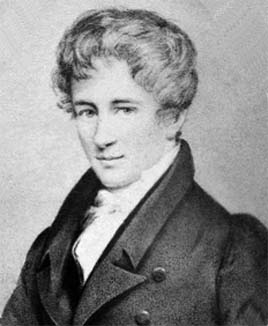

Projects for students
If you might be interested in working with me, why not drop by my office or email me? Topics can range from topology, geometry, and algebra to applications in biology and network science. Or, you can find ways to experiment with homology on your computer. Below you will find samples of ideas for future projects that I am willing to supervise, and the teaching section above contains a list of some of my previous projects. I am happy if you contact me to see if I can offer something else that matches your interests.
Braids, knots, and links
Topological structures like knots, braids, or Möbius strips help engineers to construct more efficient conveyor belts, computer scientists to plan the motion of robots and to construct quantum computers, and chemists and biologists to understand the structure of large molecules and genes.
Lorenz has described a three-dimensional system of non-linear ordinary differential equations that arises in many contexts such as a simplified mathematical model for atmospheric convection, lasers, dynamos, electric circuits, chemical reactions, and forward osmosis. And for some choices of parameters, it has knotted periodic orbits.
The mathematical theory of braids, knots, and links is attractive because the objects appeal to geometric intuition and are easily visualized. But, it turns out that there are deep connections to algebra: Braids form groups, and they describe features of the representation theory of quantum groups and Hopf algebras. The lesser known racks and quandles are algebraic structures that are easy to describe, but strong enough to classify all knots. There is still much to be explored in this area.
Trees and Evolution
As the saying goes: Nothing in biology makes sense except in the light of evolution. The foundations of evolutionary biology were laid by Darwin (1809-1882). He also sketched the first evolutionary tree.

Ever since then, the ability to think in terms of trees has become a central competence for evolutionary biologists, and the study of patterns of descent in the form of trees has developed into an important branch of life sciences: phylogenetics.
Phylogenetics has spawned new research in mathematics, involving finite metric spaces, spaces (in the sense of geometry/topology) of phylogenetic trees, affine buildings (in the sense of Lie theory), tropical geometry... leading to both practical as well as theoretical results.
Graphs and Networks
Network science is an interdisciplinary academic field which studies, among other things, computer networks, telecommunication networks, sensor networks, and biological networks. As such, it links the mathematical sciences to other core research areas within the IME faculty at NTNU: computer and information science, electronics and telecommunications, and telematics, of course.
Arguably one of the earliest results in network theory dates back to Euler (1707-1783): the problem to find a walk through the city of Königsberg that would cross each of the seven bridges once and only once, or show that such a path does not exist. His solution was the beginning of the development of graph theory and lead to central ideas of modern topology and homotopy theory.
While there is no doubt that numbers and functions have proven to be very useful concepts to model certain quantitative aspects of everyday life, topologists have developed ideas that can also be used to study qualitative features in networks and other general systems of interrelations.
Fixed Point Theory
The theory of the equation f(x)=x has produced some of the most generally useful results in mathematics. Banach's fixed point theorem and Brouwer's fixed point theorem are two pillars of the theory that every student will learn about, and they are in turn the main ingredients for fundamental applications ranging from biology, numerical computations, economics, hydrodynamics, differential equations to game theory.
From a topologist's perspective, one may wonder: What can be said about the space of fixed points of a given function? (Is it non-empty?) What can be said about the space of all functions that have a fixed point? (Is it the space of all continuous functions?) There are various variants of these questions that can be starting points for projects in this area.
As elementary as it might seem at a first glance, fixed point theory interacts with many seemingly more elaborate mathematical theories, and can, therefore, be an easy way into other subjects of interest, such as Burnside rings, Hochschild homology, Hopf-Conley index theory, bordism theory, and even stable homotopy theory.
Algebraic K-Theory
Every vector space has a basis. This is useful to know because each basis gives rise to a coordinate system, which in turn can be used to do calculations with vectors and matrices. However, there are modules over other rings that look like they should have a basis, but in fact, they have not. This failure is measured by lower K-theory. Even when bases and coordinates exist, there is usually no preferred choice, and the coordinate changes have to be kept under control, so as to make sure that observed features do not depend on arbitrary choices. This is codified in higher K-theory. As such it is one foundation for the mathematical study of symmetries.
K-theory is concerned with universal (read: best) invariants of mathematical structures. For that reason, explicit evaluations of these invariants are difficult, and new calculations are always welcome with open arms. On the other hand, because of its universal approach, the areas of applications range throughout mathematics, and it is possible (but not necessary) to learn a lot of mathematics when working on examples with K-theory in mind. Projects in this area typically focus on examples that motivate and illustrate some of the general K-theory machinery.
Homology of Groups
Symmetries are everywhere, and groups are the mathematical structure to describe symmetries. Some of the most prominent Norwegian mathematicians devoted large parts of their lives to the theory of groups: Niels Henrik Abel (1802-1829), Peter Ludwig Mejdell Sylow (1832-1918), and Marius Sophus Lie (1842–1899).

Topology has many methods to offer to study symmetries and groups, homology for instance. This is based on the idea that more complicated groups can be approximated by means of more elementary ones, the abelian groups, named in honor of Abel. But, homology of groups is typically not easy to compute.
It is worth the while to spend some time with the calculation of the homology of the full permutation groups, or the full matrix groups over finite fields, for example. There are computer programs that allow for sample experiments, but the computational complexity of the problem offers some severe challenges. The subject allows for ample exploration in many directions.